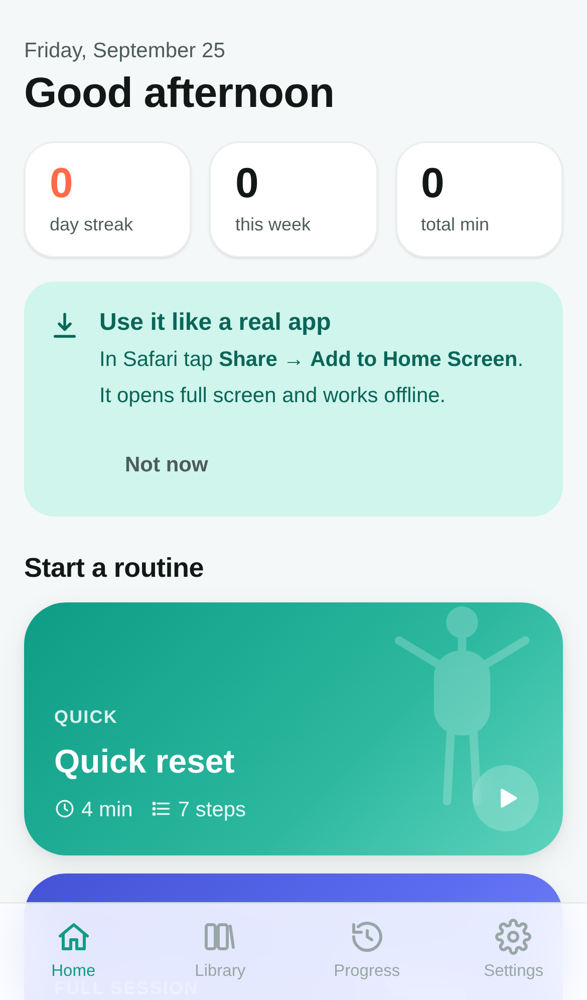
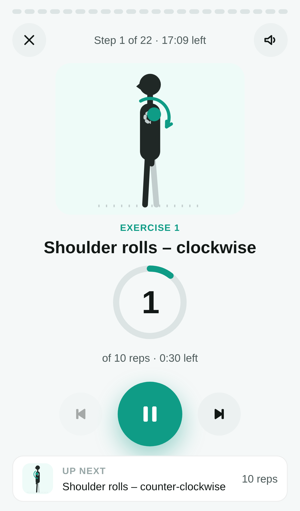
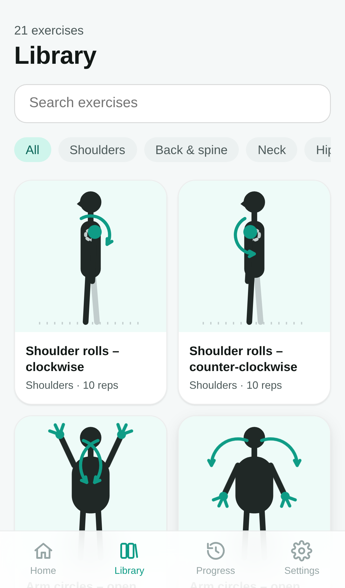

← Current app
Version archive
Every major version of Mobility stays online so the evolution of the product can be walked through. Archived versions are frozen: they keep their own local data and never update.
Version 2 current October 2026
- New illustration style: flat vector characters on soft blobs, with hair, clothing and props (band, door anchor, yoga block).
- Animations rebuilt as SMIL timelines so every figure restarts in sync with the rep counter and freezes on pause.
- Seven post-surgery pec rehab exercises: external rotations (open hand, fist, band), band pull-aparts, internal rotation, thoracic circles with a block, seated oblique rollback.
- Sets, asymmetric tempo (2 s out / 3 s back) and therapist-approval cautions in the player.
- No-index rules for search engines and AI crawlers; this archive.
Version 1 25 September 2026
- First release: home with Quick reset, Full physio session and Desk break; custom routine builder; progress and settings.
- Freeletics-style player with get-ready countdown, rep pacer, hold timer, rest phases, rotating cues, sound and vibration.
- 21 exercises drawn as monochrome line figures with CSS keyframe animations.
- Installable PWA with offline support and GitHub Pages deployment.


